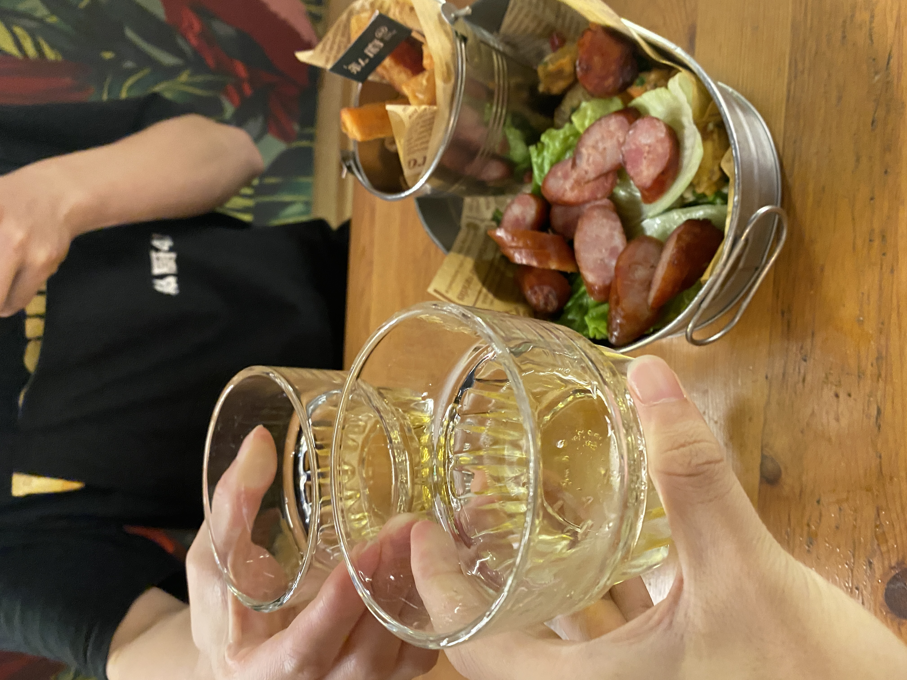
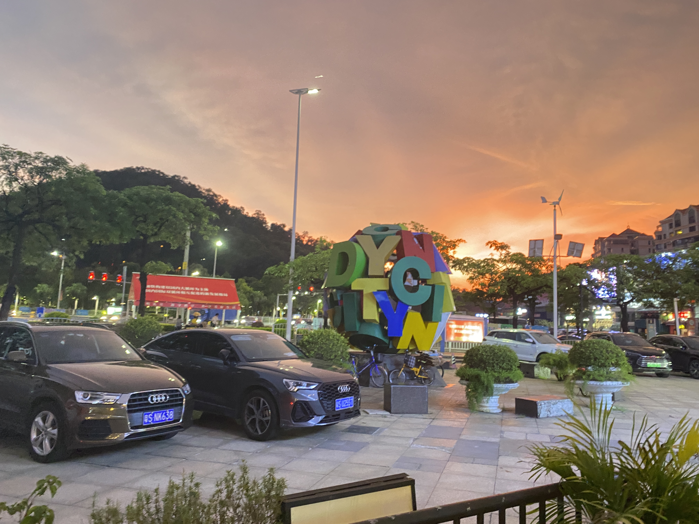
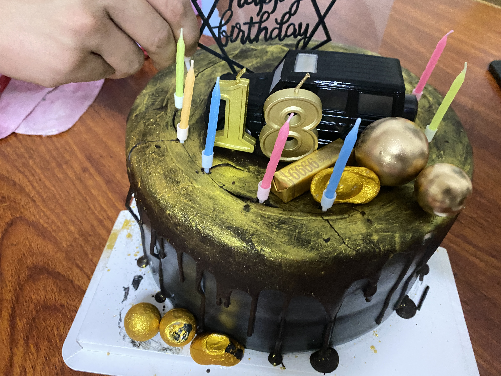
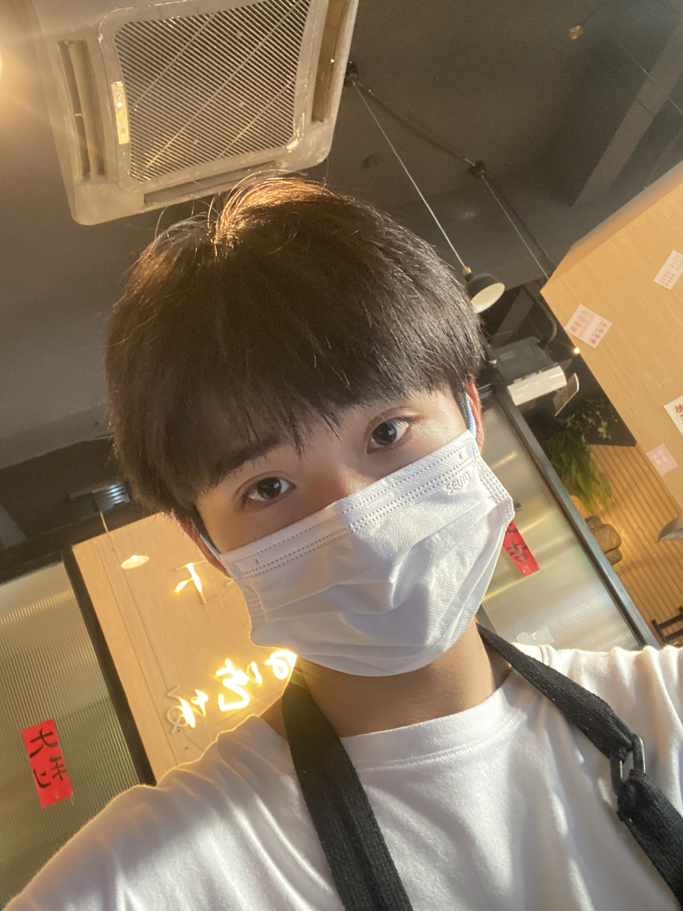
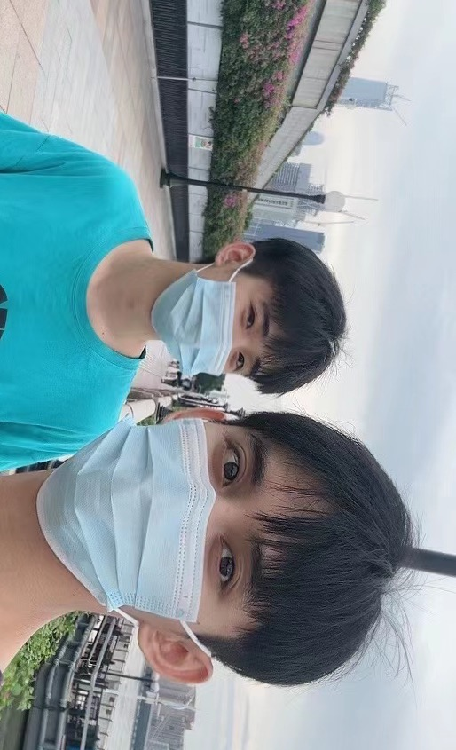
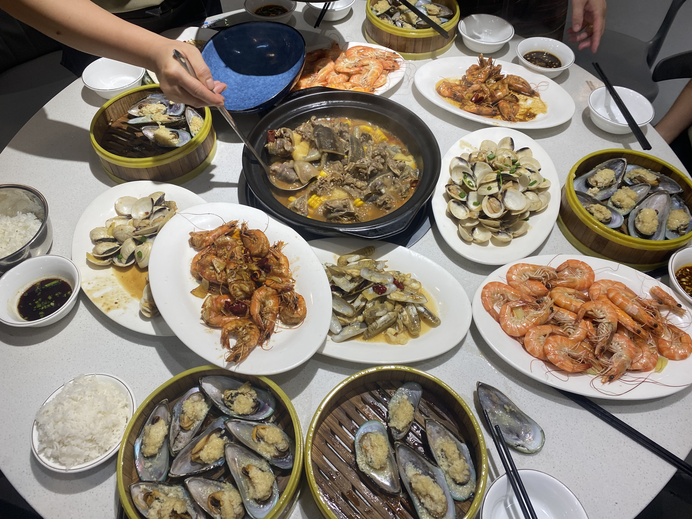
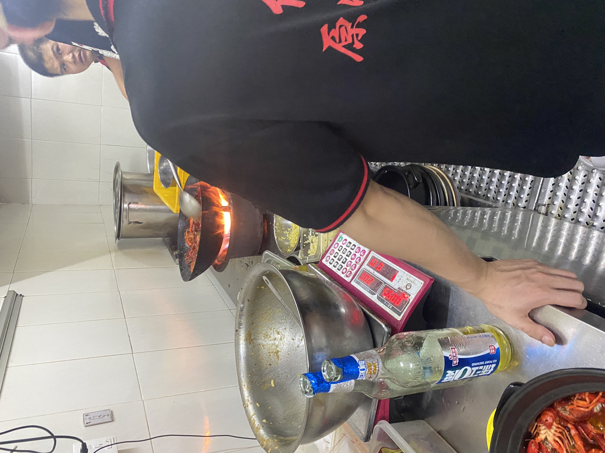
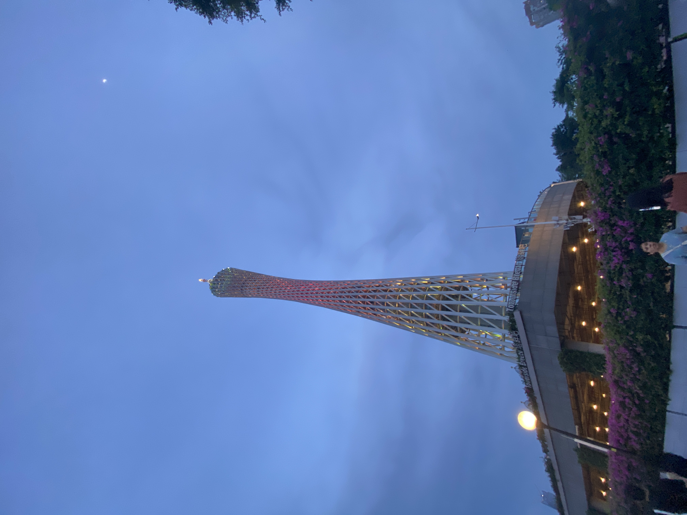
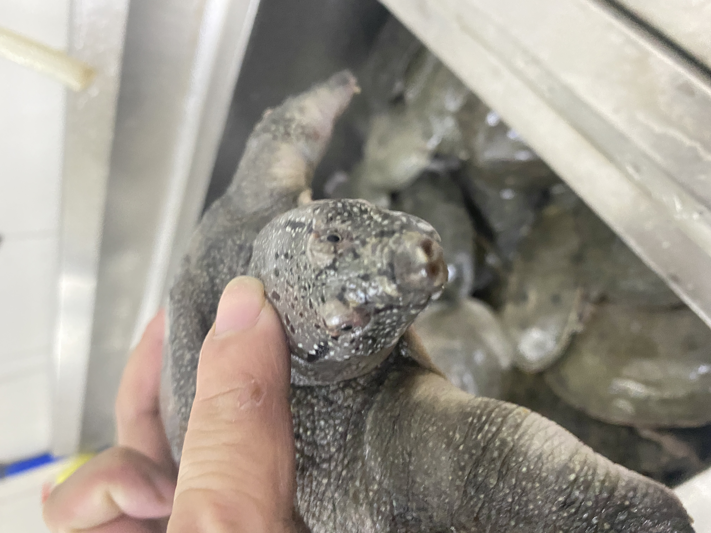
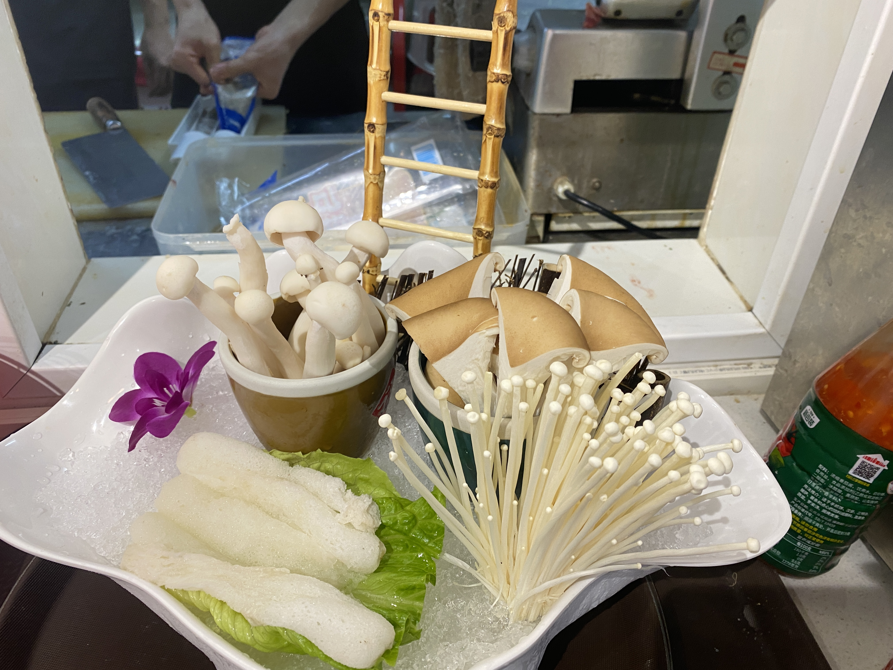

第一次打暑假工的经历
   
暑假工作让我深刻体会到了工作的辛苦。在职场中，我们不再是学生，需要按时上班，完成分配给我们的任务，并且在规定的时间内完成。以前，我只是为了自己的学习和成绩努力，而现在，我的工作内容和表现直接关系到店里面的运营和效益，这给了我巨大的压力。但正是这种压力，让我更加明白了努力工作的重要性。
暑假工作让我学会了与人相处。在店里，我们需要和各种各样的人打交道，有时还要与不同国籍的外籍员工合作。这要求我们要有良好的沟通与协作能力，并且要尊重不同的文化和价值观。通过与同事的相互合作和互动，我培养了良好的团队合作意识，学会了倾听别人的意见和学习从他人身上获得经验。
其中有快乐也有难过，快乐是我融入了大家，难过的就是遇到了形形色色的人有时候自己不怎么这么应对，还好有大家 其中的汗水让我明白了每一分钱的来之不易还有劳动的快乐
   快乐影像
大家快乐的聚在一起累了一天了
 
打工只是一种磨练的过程。对于结果，我们应该有这样的胸襟：不以成败论英雄，不一定非要用成功来作为自己的目标和要求。人生需要设计，但是这种设计不是凭空出来的，是需要成本的，失败就是一种成本，有了成本的投入，就预示着的人生的收获即将开始。
小草用绿色证明自己，鸟儿用歌声证明自己，我们要用行动证明自己。打一份工，为以后的成功奠基吧!
不经风雨，怎见彩虹，没有人能轻轻松松成功。经过我的一番努力我的假期打工悄然落幕了，经过这次实践，我能真正体会到这一点。在工作中，在真正的社会交际中，顾客永远是对的，你不能掺杂自己的个性。
第一：乐观，不管遇上什么样的困难，都要用乐观的态度去面对，相信会有所转机。
第二：自信，首先自己要有自信，自信不是自夸，而是对自己的能力作出的肯定，这样别人才能更加相信信任你。你要对自己说“我一定能行”那你就一定能行。
第三：肯努力，我一直非常信奉一句话，“努力就有希望”不要觉得成功遥不可及，其实只要你在不停的努力你就靠成功越近，“踮起脚尖就更靠近阳光”在努力的过程中千万不要放弃，说不定你距离成功就差一步，而你却放弃了!要勇于面对各种挫折，挫折并不能阻挡有勇气的人走向成功。
第四：谦虚做人，特别对于刚走出校门的毕业生至关重要，我们本来对于社会上的知识知之甚少，我们千万不能骄傲自大，自以为是，那是肤浅的表现，我们要谦虚做人融入社会这个团体中，人与人之间合力去做事，使其做事的过程中更加融洽，更事半功倍。别人给的意见，我们要听取、耐心、虚心地接受。
经过这一次的暑假打工，社会实践，我真的是长了不少的见识，增长和很多社会经验，在实践中我也找到了自身的价值。我早晚都要走出校园，走进社会大染缸去。